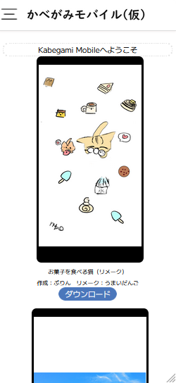

<html><head><title>Get Kabegami Mobile</title></head><body></body><head></head><body><div style=""><span style="display: inline-block;position: fixed;width: 100px;height: 25px;background: #111;top: 24px;margin-left: 98px;border-bottom-right-radius: 15px;border-bottom-left-radius: 15px;"></span><span style="display: inline-block;position: fixed;width: 6px;height: 6px;background: #000;top: 26px;margin-left: 111px;border-radius: 50%;border: 4px #444141 solid;"></span></div><div style="display: inline-block;font-size: 42px;position: fixed;font-family: Arial;top: 269px;background: #fff;border: 1px #d0d0d0 solid;margin-left: 62px;">Get The Kabegami Mobile.</div><a style="text-decoration:none; color:#fff;" download="" href="https://umaidango.github.io/kabegami/mobile/kabegami-mobile-ver1.apk"><div style="display: inline-block;font-size: 42px;position: fixed;font-family: Arial;top: 346px;background: #9793c8;border: 1px #675ed5 solid;margin-left: 185px;border-radius: 12px;color: #fffefe;padding-left: 10px;padding-right: 10px;">Now Download</div></a></body></html>